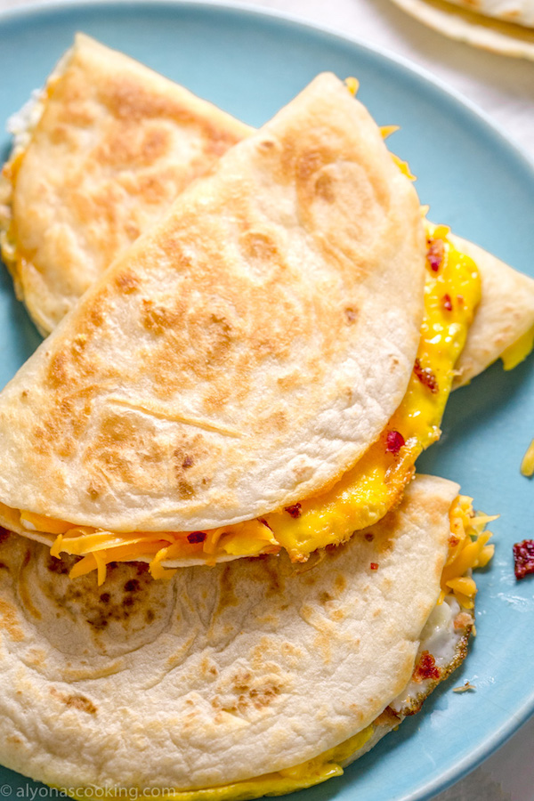

Tortilla Eggs

Something I Make at Least Twice a Week
Ingredients
- 1 lg potato sliced thinly
- 1 tbsp of Olive Oil
- 2 Eggs
- 1/2 cup of chopped cilantro
- 1/2 cup of chopped green onions
- 1 lg tortilla (burrito sized)
- 1/4 cup of shredded chesse (cheddar)
Instructions
- Set your burner to medium-high heat, your your tbsp of olive oil into a heated skillet along with your thinly sliced potatos. Season generously with Salt and Pepper.
- While your potatoes are cooking, scramble your two eggs and mix in the chopped cilantro and green onions.
- Once the potatoes have softened and are fully cooked, arrange them on the pan in one thin layer, covering the entire surface of the pan (taking care not to burn yourself).
- Turn your burner down to a medium heat and pour your scrambled mixture over top of the potatoes.
- Give the eggs a moment (15-20 to seconds) to cook, but while they are still wet on top, lay your tortilla across the top of everything. You may also want to press the tortilla gently into the wet eggs.
- Gently shake the pan to test if the bottom is adequately cooked. If the potatoes, eggs, and tortilla freely slide as an entire unit, they are done. If not, give them a minute more.
- Once it slides freely, flip the entire dish tortilla-side down (this may take some practice!)
- Once the tortilla side in down (and potatoe side is up), sprinkly your shredded cheese over the entire dish and fold in half. The cheese should glue it together.
- Make sure to get good color on both sides,and then slide out of the pan.